OBRAS / ARQUITECTURA
Arquitectura
Habitar con propósito:
Mi entrada a la arquitectura nace de esa idea: que cada obra debe ser viable en lo económico, en el tiempo y en la vida que genera.
Viabilidad económica:
se resuelve siempre en diálogo con el mandante.
Viabilidad en el tiempo:
pensar en flexibilidad, mantenimiento y valor futuro.
Viabilidad vital:
la capacidad del espacio para propiciar vida.
Desde el volumen busco que la luz, el entorno y el recorrido revelen lo inesperado.
Que cada proyecto conecte lo íntimo y lo colectivo, lo público y lo privado.
Mi práctica une diseño de arquitectura, construcción, desarrollo y gestión de rentas como una declaración de viabilidad a largo plazo.
Cada obra es una conversación entre ganas, economía y entorno.
Series y proyectos
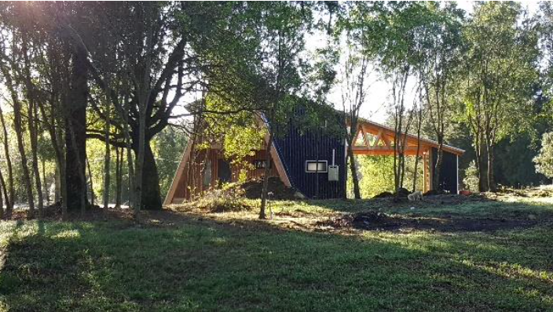
CASA A. Alto Pinar - Villarrica.
19 imágenes
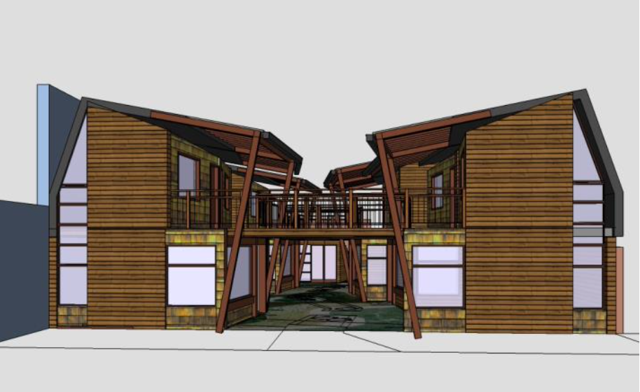
LOCALES MANOS CONECTADAS. Pucón.
8 imágenes
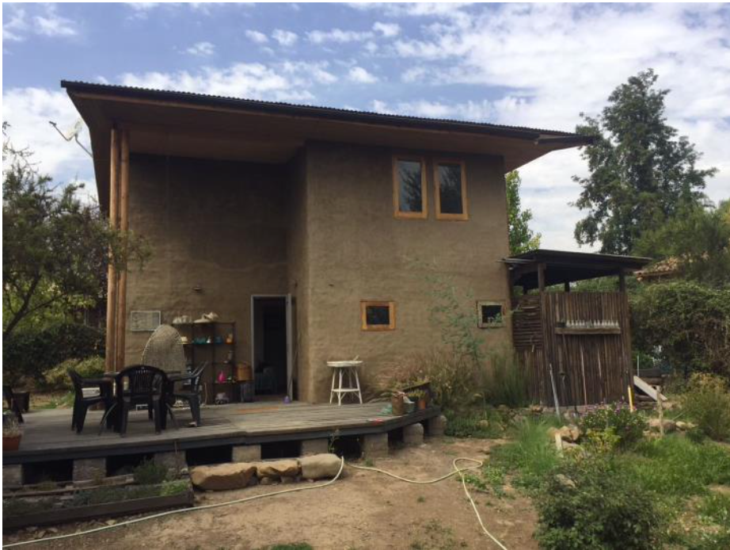
CASA 2MG. Comunidad Ecológica - Stgo.
13 imágenes
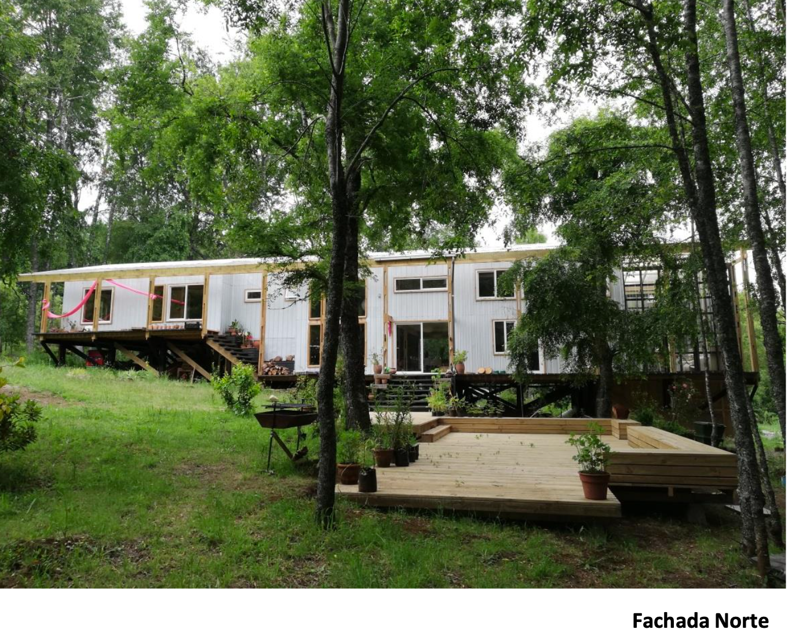
CASA CMG. Alto Pinar - Villarrica.
24 imágenes

CASA PUMPÍN. Alto Pinar - Villarrica.
9 imágenes
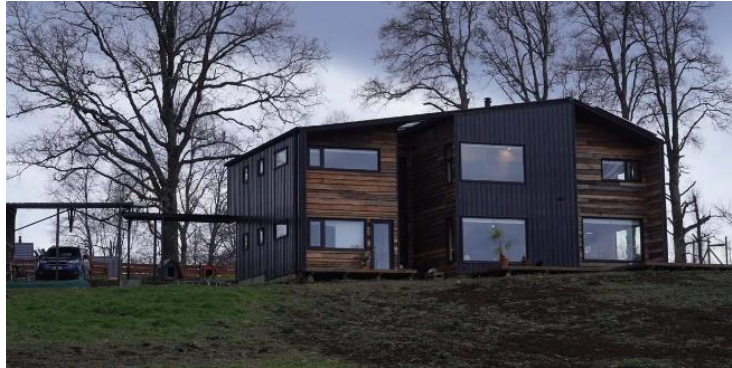
CASA R+S. Praderas del Sur - Villarrica.
17 imágenes
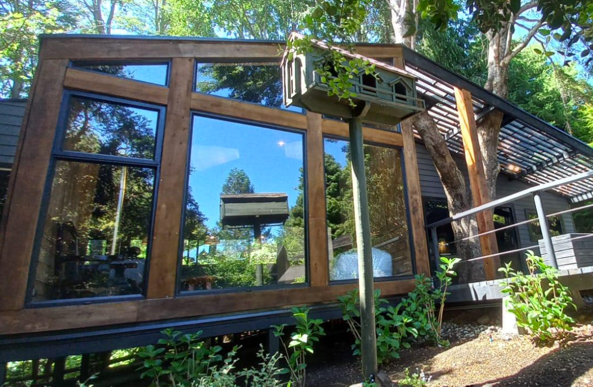
QUINCHO RMV. Loncovaca - Villarrica.
7 imágenes
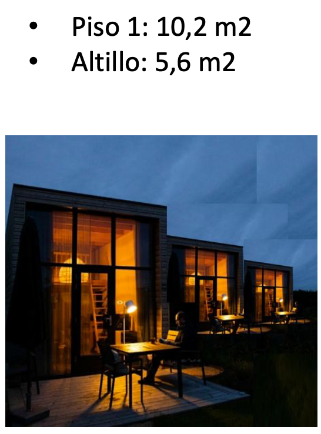
TINY HOUSES
18 imágenes
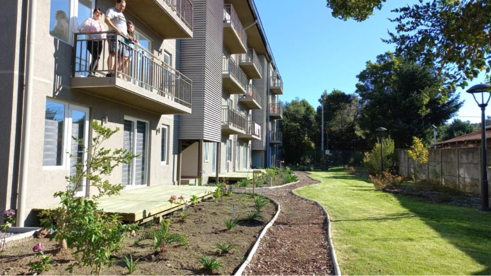
EDIFICIO NATIVO. Pucón.
22 imágenes
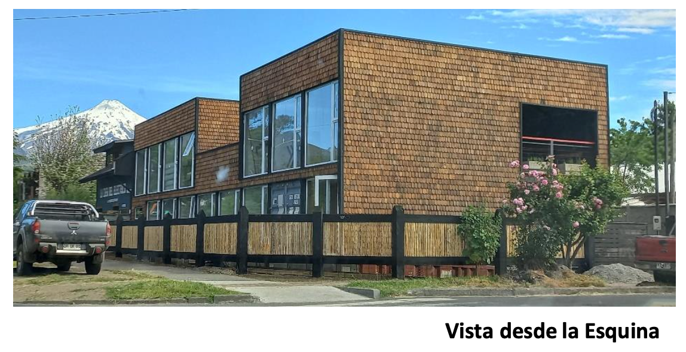
APART HOTEL KILA. Pucón.
19 imágenes
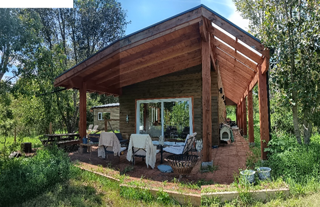
CASA CALCAGNI GUERRERO, Villarrica
4 imágenes
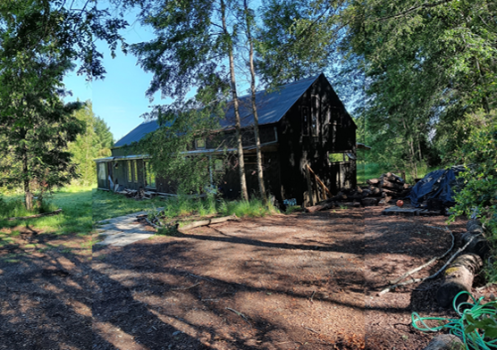
CASA CORDELLA LUCO, Villarrica
22 imágenes